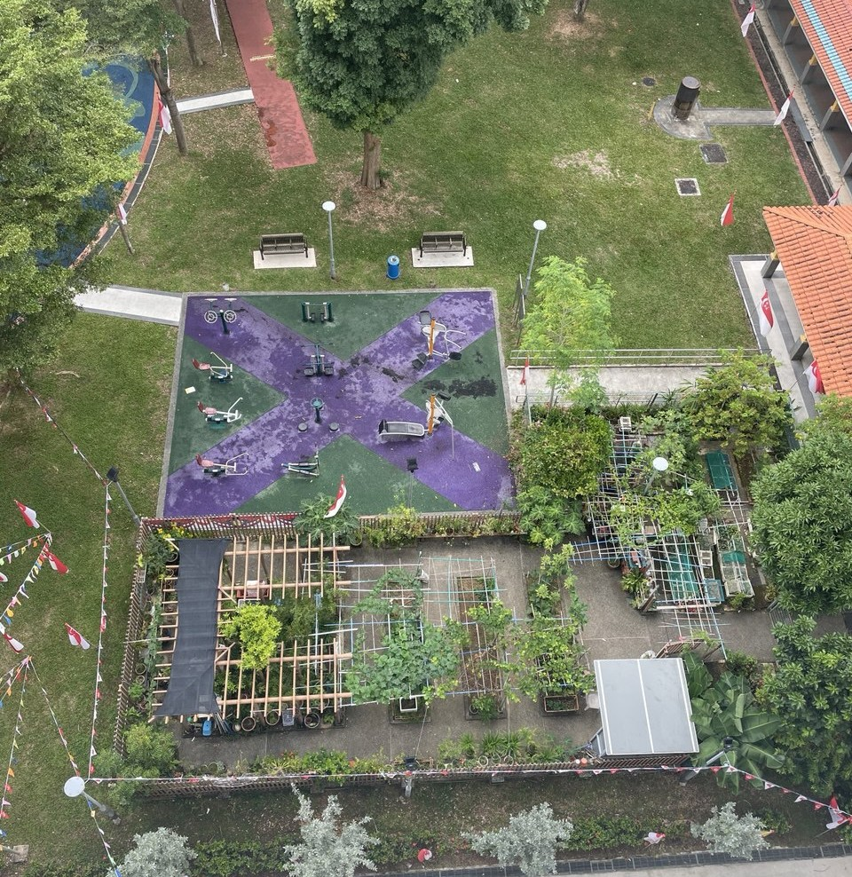
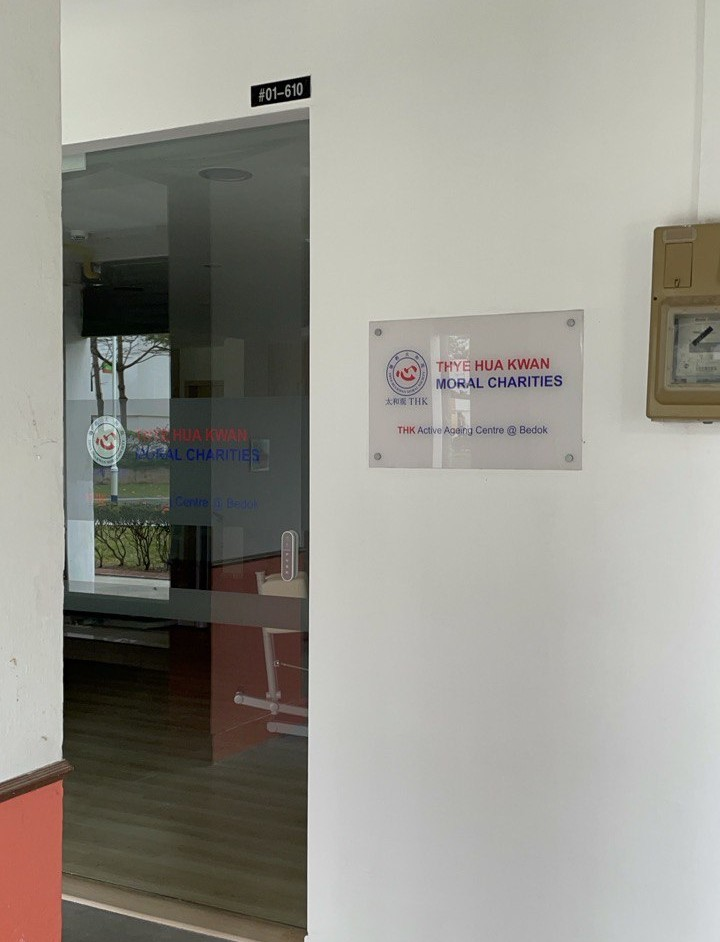
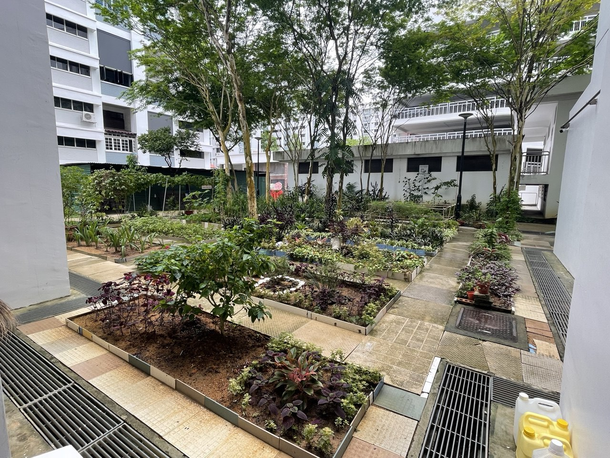
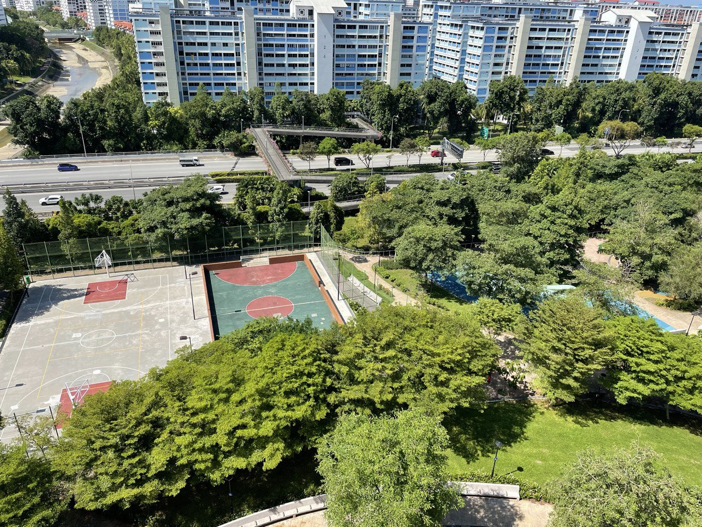

Singapore has provided various forms of amenities for its residents, such as community centres, clinics, playgrounds and parks.
While there are a variety of amenities provided for the general public, there are some which might be more frequented by older adults, such as
community centres, clinics and eldercare services (day care centres, active ageing centres etc.).
Over the years, Singapore has developed infrastructure and implemented policies to promote and enable ageing-in-place for older adults.
This provides opportunities for this diverse group of individuals to age well and healthily within their communities.


With changing demographics in different regions and estates around the island, it would be interesting to investigate if there is a relationship between
age demographics and provision of amenities.
This could serve as a starting point to identify if there are any gaps in terms of provision of amenities for
older adults as they age-in-place. Provision of such amenities could also benefit the general public, whom also utilize these amenities.


Map
The map below illustrates the population count at the subzone level in Singapore using a choropleth map.
The darker the colour, the higher the population count. Subzones with zero population counts are shaded in grey.
Hover over each subzone for the name of the subzone, corresponding planning area and region and the population count.
Zoom in and out of the map for better clarity of the spread of amenities in each planning area and/or subzone.
Use the checkboxes to toggle the visibility of the amenities on the map.
Click on the subzones for a glimpse into the age demographics of the subzone's resident population.
Amenities:
Preliminary Findings
Population numbers
The East and North-east region of Singapore contains more subzones with larger resident population, and there is a fair distribution of
amenities in the East.
Areas in Tampines and Bedok are home to a larger proportion of older adults aged 65 and above.
In almost all the subzones, there is a substantial proportion of individuals aged 50 to 64 years - the middle-aged adults and "young seniors".
Provision of amenities
For subzones with a larger population, there are often more amenities available in the area.
Subzones with a smaller resident population are also well-provided with amenities, especially the downtown and central areas.
While some subzones with smaller populations have fewer amenities, it is likely that these areas are still being developed,
where new housing projects are being built. As residents move in, more amenities could be developed in future, and identifying where these can
be placed would be necessary.
Conclusion
It seems that the amenities are fairly spread out over the island, where population numbers are greater than zero.
However, there are still some gaps that can be seen, such as in the Serangoon and Bukit Timah area.
With a growing proportion of individuals aged 50 to 64 years old, 10 years into the future, they will likely be able to
benefit from the available amenities in the neighbourhood.
There is hence a need to identify any gaps in terms of provision of amenities, so future developments can be established to
benefit future generations.
It is also important to ensure a balance and variety of amenities, and avoid over-providing, as resources could be used for
other purposes such as housing and unprogrammed public spaces.
Understanding the WHY (Task), WHAT (Data), HOW (Idiom).
Purpose of developing visualization - Presenation | Story-telling | Exploratory.
Datasets - strengths and limitations (cleaning dataset) .